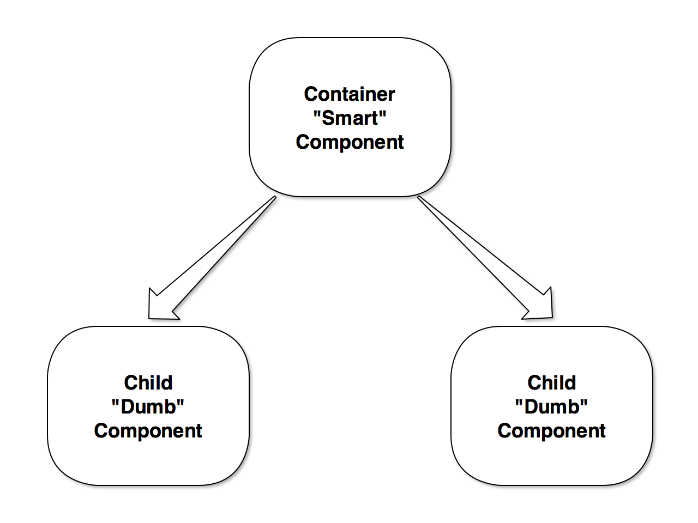

Many pieces of the Angular ecosystem to cover!
The Angular CLI is a command line interface tool that can create a project, add files, and perform a variety of ongoing development tasks such as testing, bundling, and deployment.
npm i -g @angular/cli
# yarn global add @angular/cli
ng new --link-cli --routing --style scss my-project
├── e2e
├── package.json
├── protractor.conf.js
├── src
│ ├── app
│ │ ├── app-routing.module.ts
│ │ ├── app.component.ts
│ │ └── app.module.ts
│ ├── index.html
│ ├── main.ts
│ ├── polyfills.ts
│ ├── styles.scss
├── tsconfig.json
└── yarn.lock
One framework.
Mobile & Desktop
Angular is a development platform for building mobile and desktop web applications.
A function that adds metadata to a class, its members (properties, methods) and function arguments.
Decorators are an experimental (stage 2), JavaScript language feature. TypeScript adds support for decorators.
Also known as an annotation
import { deprecate } from 'core-decorators';
import { compact } from 'lodash';
class Person {
...
// deprecate the name method using a decorator
@deprecate('Use the fullName method instead')
get name() {
return compact([this.first_name, this.last_name]).join(' ');
}
get fullName() {
...
}
}
An Angular class responsible for creating, reshaping, and interacting with HTML elements in the browser DOM.
The directive is Angular's most fundamental feature.
A category of directive that can listen to and modify the behavior of other HTML elements, attributes, properties, and components. They are usually represented as HTML attributes, hence the name.
Example demonstrating the ngClass attribute directive and a custom myHighlight directive
<my-app>
<div [ngClass]="{active: active}" [myHighlight]="color"></div>
</my-app>
A category of directive that can shape or reshape HTML layout, typically by adding and removing elements in the DOM.
<ul>
<li *ngFor="let person of people">{{person.name}}</li>
</ul>
import { Component } from '@angular/core';
@Component({
selector: 'home',
styles: [`
h1 { color: rebeccapurple; }
`],
template: `
<h1>{{title}}</h1>
`
})
export default class HomeComponent {
public title: string = 'Hello World';
}
@Component({
selector: 'app',
template: `<h3>Party Planner</h3>
<person-input
(addPerson)="addPerson($event)"
>
</person-input>`
})
export class App {
public people;
addPerson(name) {
this.people.push({id: id(), name});
}
}
import { Component, Output } from '@angular/core';
@Component({
selector: 'person-input',
template: `
<input #personName type="text" />
<button (click)="add(personName)">Add Person</button>
`
})
export class PersonInput {
@Output() addPerson = new EventEmitter();
add(personInput){
this.addPerson.emit(personInput.value);
personInput.value = '';
}
}

An Angular pipe is a function that transforms input values to output values for display in a view.
<!-- Today is Apr 21, 2017 -->
<span>Today is {{ currentDate | date }}</span>
import { Injectable } from '@angular/core';
@Injectable()
export default class DataService {
public title: string = 'My Application';
}
Helps you organize an application into cohesive blocks of functionality. An Angular module identifies the components, directives, and pipes that the application uses along with the list of external Angular modules that the application needs, such as FormsModule.
import { NgModule, CommonModule } from '@angular/core';
import { HomeComponent } from './home.component';
import { HomeService } from './home.service';
export default class HomeModule {
declarations: [
HomeComponent
],
imports: [CommonModule],
exports: [HomeComponent],
providers: [HomeService]
}
RxJS is a library for reactive programming using Observables, to make it easier to compose asynchronous or callback-based code.
The Observable object represents a push based collection.
Observables are used extensively in Angular (Http service)
A Subscription is an object that represents a disposable resource, usually the execution of an Observable.
Subscription objects have a single method!
const source = Rx.Observable.timer(200, 100)
.take(3);
const subscription = source.subscribe(
function (x) {
console.log('Next: ' + x);
},
function (err) {
console.log('Error: ' + err);
},
function () {
console.log('Completed');
});
// => Next: 200
// => Next: 100
// => Next: 100
// => Completed
Support for common higher order functions from JavaScript
Http is available as an injectable class, with methods to perform http requests
import { Injectable } from '@angular/core';
import { Http, Response } from '@angular/http';
import { Observable } from 'rxjs/Observable';
import 'rxjs/add/operator/catch';
import 'rxjs/add/operator/map';
import { Hero } from './hero';
@Injectable()
export class HeroService {
private heroesUrl = 'api/heroes'; // URL to web API
constructor (private http: Http) {}
getHeroes(): Observable<Hero[]> {
return this.http.get(this.heroesUrl)
.map((res: Response) => res.json())
.catch(() => {
// Handle errors here
});
}
}